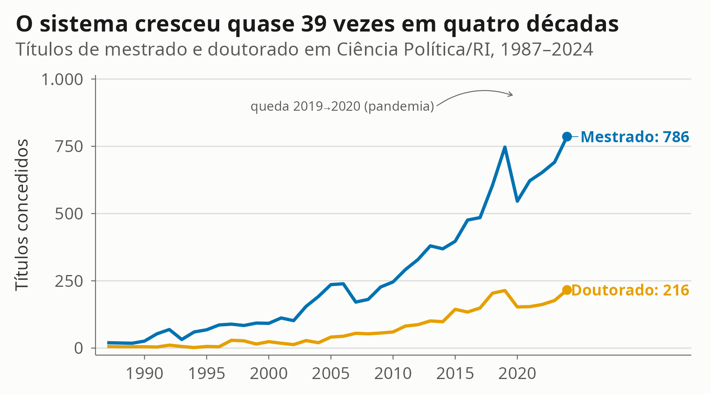
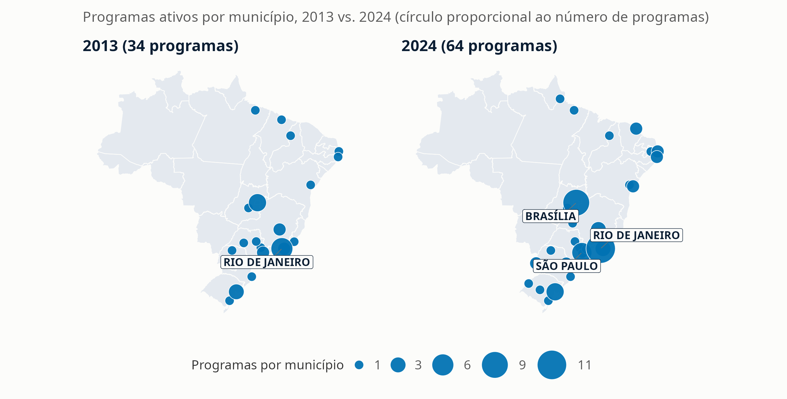
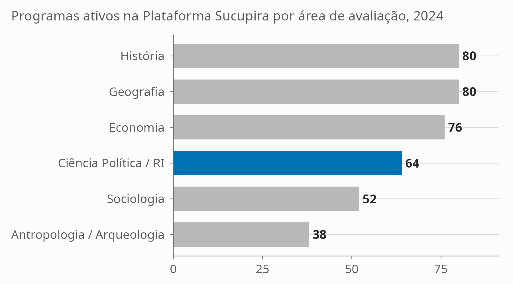
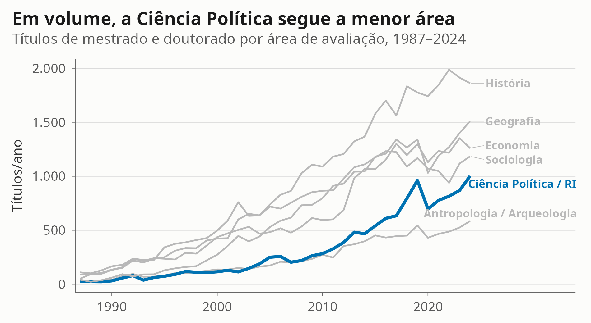
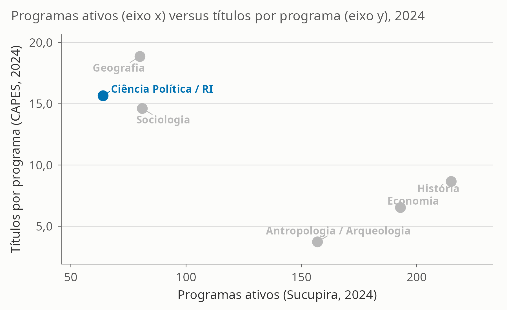
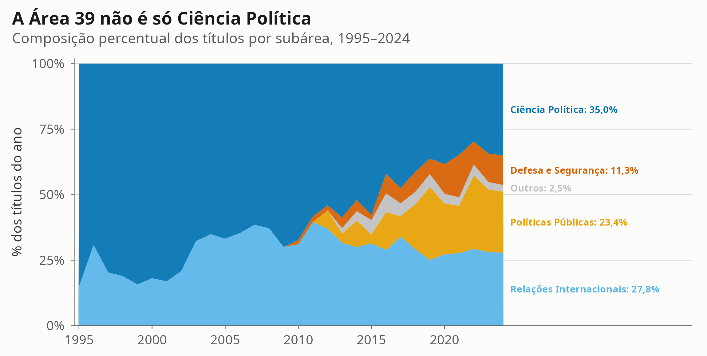
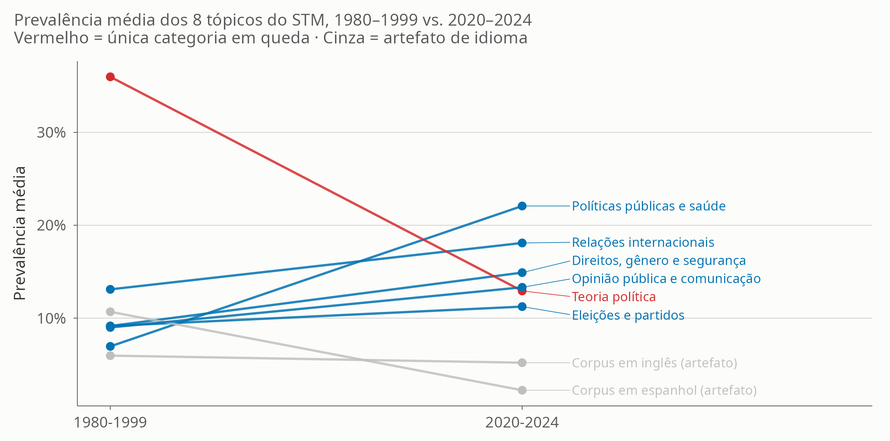
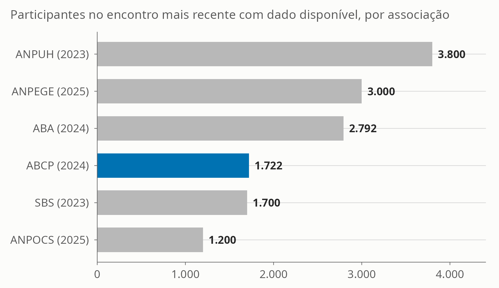

Institucionalização, expansão da pós-graduação e diversificação temática
2026-08-31
Institucionalização, expansão da pós-graduação e diversificação temática
Vitor Peixoto — UENF · August de 2026
Fontes: Catálogo CAPES (1987–2024) · Plataforma Sucupira (2013–2024) · OpenAlex (1977–2024)


Municípios com programas: 21 (2013) → 29 (2024). Participação do Sudeste: 47,1% → 43,8%.


1987 → 2024, crescimento relativo:
Efeito de base: partiu de 26 títulos em 1987, o menor patamar inicial do grupo.




Sessenta anos depois da criação dos primeiros programas, o retrato é de uma disciplina pequena, mas em expansão consistente e cada vez mais diversa — sem que isso permita atribuir o crescimento a uma política específica.
Vitor Peixoto — UENF
/dados/historia_ciencia_politica_brasilSCRIPTS/01 a SCRIPTS/17; artigo em artigo_historia_cp_brasil.qmdAUDITORIA.md20260828CAPES · Sucupira · OpenAlex · 1987–2024 · artigo_historia_cp_brasil.qmd